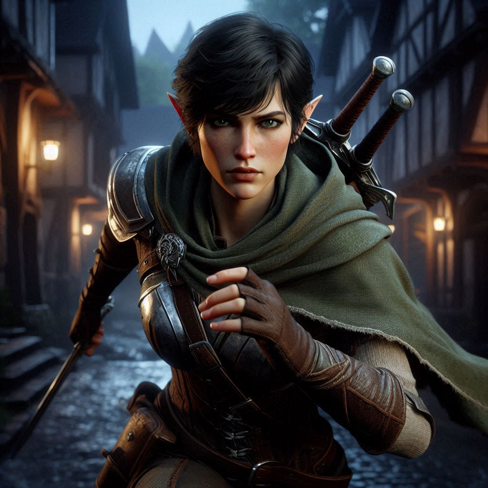

Ambush in the Courtyard
The cool air of the Royal Library’s archives hums with latent magic. The enchanted torch flickers in your hand as you adjust the angle of its light, remembering Liora’s cryptic words: “The key is in the light.”
You watch intently as the glow of the runes around the pedestal pulses. Slowly, you tilt the torch, illuminating the base where the light converges, and the runes fade from their brilliant glow to a faint shimmer. The wards protecting the ancient map have weakened, and your heart skips a beat.
With careful hands, you reach for the map, feeling a rush of energy as your fingers touch the brittle parchment. The lines and markings on the map are as clear as day, yet you know they hold secrets older than the kingdom itself. Sliding the map into your pack, you exhale a breath you didn’t realize you were holding. The first half is yours—but danger lies ahead.
As you slip out of the archives, the weight of the mission presses down on you. Liora’s strange assistance keeps nagging at you. Why help you? What’s her real angle? Her warning not to meddle in royal matters feels more ominous now. But there’s no time to dwell. The shadows of the royal palace are not your friends, and with each passing moment, you’re closer to being discovered.
Just as you step into the courtyard, a rustle in the distance makes you freeze. Instinct kicks in, and your hand moves to the hilt of your sword. Your eyes scan the darkened alleyways, the flickering torchlight casting long shadows. The streets are unnervingly quiet. Too quiet.
You make it only a few steps before a voice growls from the shadows.
“Looking for something, ranger?”
Before you can react, armed figures emerge from the darkness, clad in black leather and bearing the unmistakable insignia of the Minister of Trade’s mercenaries. Their weapons gleam menacingly in the moonlight, and you recognize the cruel smirk on the leader’s face—he’s no stranger to dirty work.
Your heart races, but you steady yourself. You’ve faced opponents before, but this time is different. They’re after the map.
“We know what you’re carrying,” the leader sneers, taking a step forward. “Hand it over, and maybe we’ll let you leave with your life.”
Your mind races. There’s no time to think about the politics behind this attack, but you know one thing for certain: The Minister of Trade has his hand in Jorsh’s madness. Whatever dark power lies within Hemlock Caverns, the Minister is after it too—and these mercenaries will do whatever it takes to retrieve the map.
Your fingers tighten around the hilt of your sword, and your pulse quickens. “I’m not giving you anything.”
The leader grins. “Didn’t think you’d say yes.” He gestures to his men, and in an instant, they lunge at you.
You duck as the first blade swings overhead, your reflexes sharp from years of ranger training. Pivoting, you draw your sword in one fluid motion, meeting the next attacker’s strike with a ringing clash of steel. The fight is chaotic—mercenaries surround you from all sides, but you know how to keep moving, how to stay just out of reach.
But even as you dodge and counter, the sheer number of them is overwhelming. One wrong step could spell disaster. An archer in the back lines up a shot, and you catch the glint of the arrowhead in the corner of your eye.
You twist at the last second, the arrow grazing your arm instead of striking true. The pain is sharp, but you don’t have time to register it. With a grunt, you kick one of the mercenaries square in the chest, sending him crashing into a wall. Another swings at you, but you duck, bringing your blade up and forcing him back.
Still, it’s clear this isn’t just a random ambush. These mercenaries are organized, skilled, and relentless.
As you push through the skirmish, a thought crosses your mind—this is about more than just Jorsh. The Minister of Trade has been involved all along, funding illegal operations in the shadows. His ambition isn’t just wealth or power over Belladonna—it’s the dark magic hidden deep within Hemlock Caverns. If he gets his hands on that magic, the consequences could be catastrophic.
The leader of the mercenaries grins as he steps toward you again, his sword raised. “You think you’re the only one after the power of the caverns? Jorsh might be reckless, but the Minister? He knows what’s buried down there. And soon, he’ll have it all.”
His words strike a chord of fear in you. If the Minister gains control of the dark forces in the caverns, nothing will stop him. But you can’t let that happen.
With renewed determination, you parry his attack and, in one swift movement, disarm him. Your sword is at his throat before he can react.
“Tell your master,” you growl, “he won’t be getting the map.”
The leader sneers, but you can see the flash of fear in his eyes. Before you can press him further, one of his men charges at you from behind. You spin, narrowly dodging the strike, but in the chaos, the leader slips from your grasp and disappears into the shadows with the rest of his crew.
You’re left alone in the alley, your breath coming in ragged gasps. Blood trickles from the cut on your arm, and your muscles ache from the fight, but you’ve won—for now.
As the sounds of the retreating mercenaries fade, the weight of the map in your pack feels heavier than ever. You’ve underestimated the dangers of this mission. It’s not just about stopping Jorsh anymore—powerful forces are at play, forces that could tear the kingdom apart if you fail.
But despite the fear gnawing at your gut, you know one thing: You can’t stop now. You won’t stop now. The stakes have just risen, and it’s up to you to make sure that the dark power within Hemlock Caverns doesn’t fall into the wrong hands.
With a final glance at the empty alley, you turn and disappear into the night, the map secure in your pack and a new resolve burning in your chest. The real battle has only just begun.